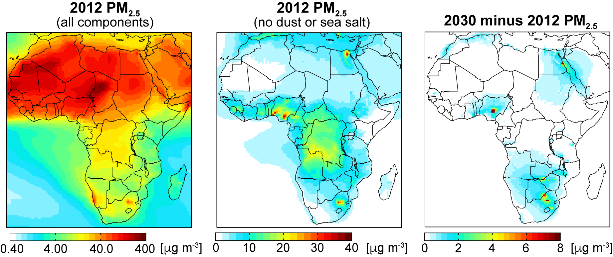

GEOS-Chem High-Resolution PM2.5 and Ozone over Africa

GEOS-Chem PM2.5 in 2012 with (left) and without (centre) dust and sea salt, and the increase due to future fossil fuels (right)
Data Description:
GEOS-Chem PM2.5 and ozone surface concentrations obtained using 2012 emissions and using a scenario of future (2030) emissions due to fossil fuel use in the electricity generation and transport sectors. The model is simulatted at the native resolution of the NASA GEOS-5 meteorology over Africa (0.5° x 0.667°; latitude x longitude). Both the 2012 and 2030 simulations use 2012 meteorology.
Data Access:
Download links below are for compressed and zipped files of GEOS-Chem annual mean surface gridded concentrations of PM2.5 and ozone in 2012 and 2030:
pm25 (compressed file size: 89 MB)
ozone (compressed file size: 91 MB)
Contact:
Please contact Eloise Marais for queries or additional information.
Reference:
E. A. Marais, R. F. Silvern, A. Vodonos, E. Dupin, A. S. Bockarie, L. J. Mickley, J. Schwartz, Air quality and health impact of future fossil fuel use for electricity generation and transport in Africa, Environ. Sci Technol., doi:10.1021/acs.est.9b04958, 2019. [PDF].